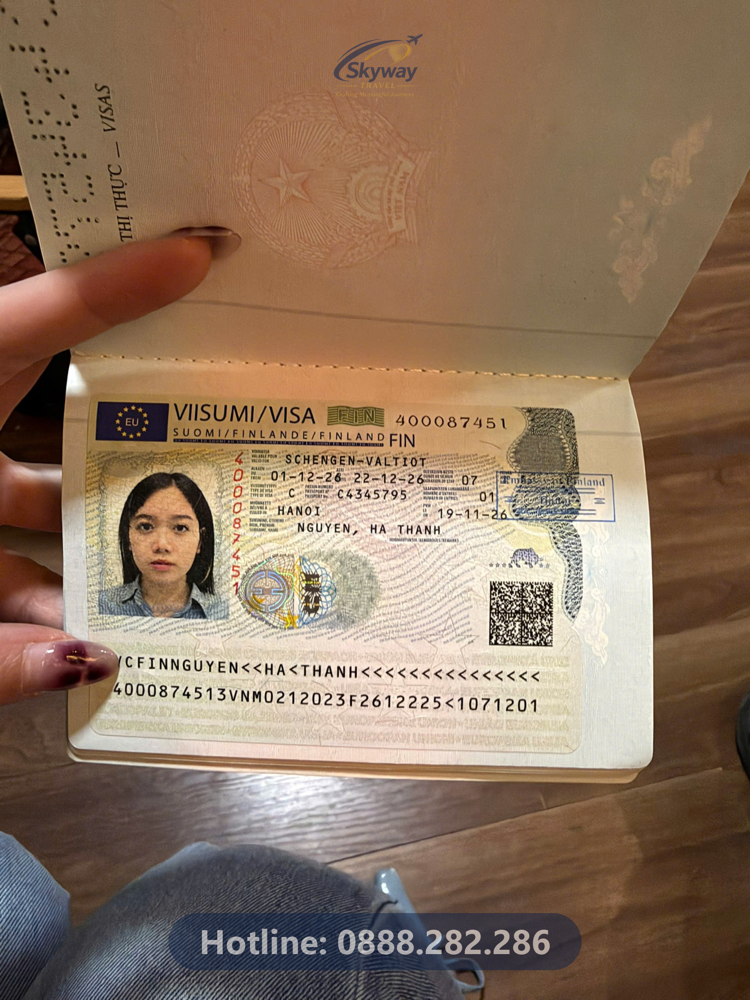
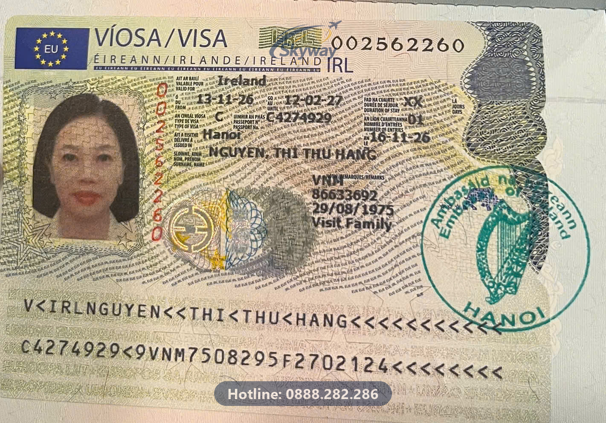
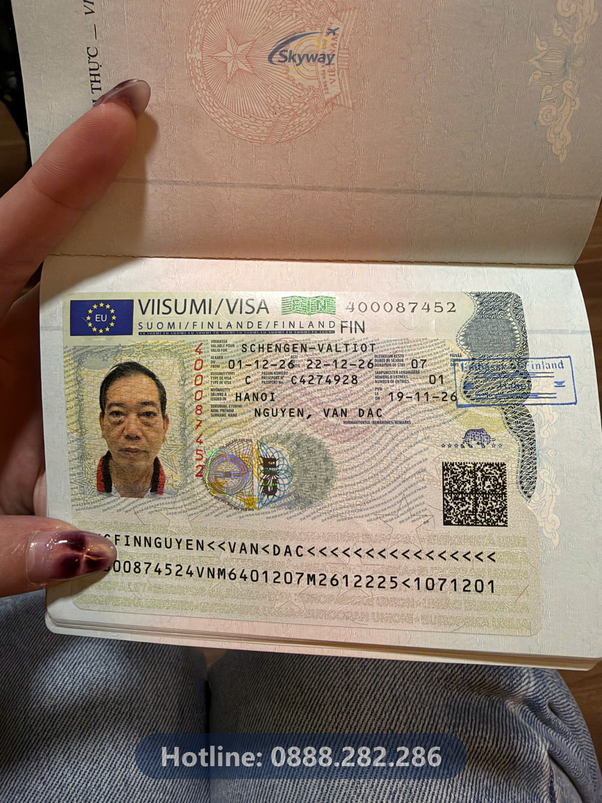
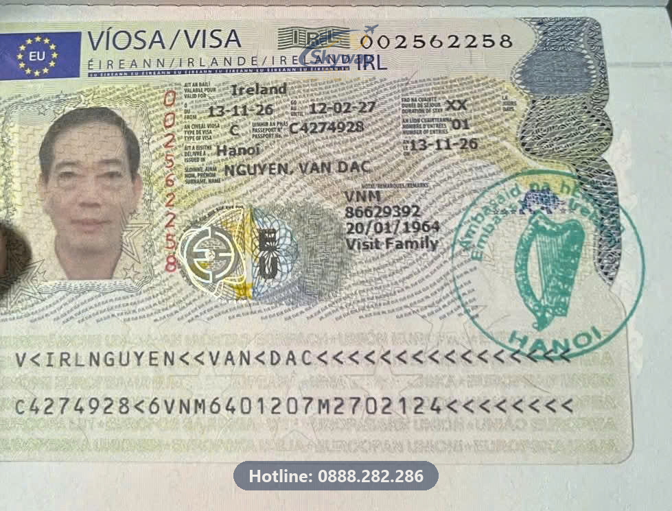
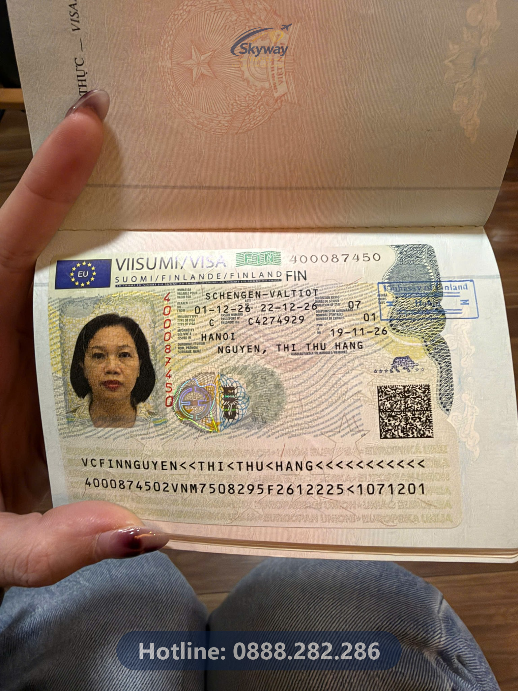
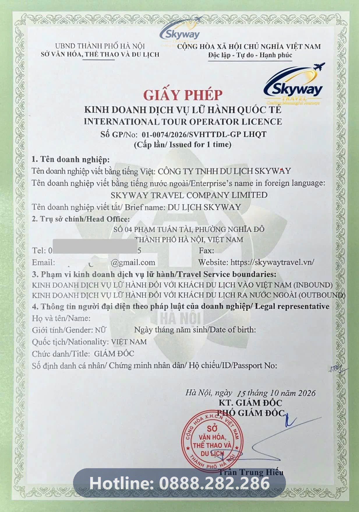

Cần nhớ: Visa châu Âu duyệt dựa trên tính logic của lịch trình và sự đồng bộ trong chứng minh tài chính, không phụ thuộc vào việc nhồi nhét những con số ảo thiếu nguồn gốc.
Thực tế hồ sơ xin visa Schengen và Ireland tại Visa Nhanh 24h
Cuối tuần qua, bộ phận xử lý hồ sơ tại Visa Nhanh 24h tiếp tục đón nhận tin vui khi 5 thị thực châu Âu chính thức về tay khách hàng. Trong đó có 03 visa Schengen do Đại sứ quán Phần Lan cấp với thời gian lưu trú linh hoạt và 02 visa Ireland diện thăm thân. Đây là kết quả của quá trình thẩm định kỹ lưỡng, bám sát từng điểm mạnh và điểm yếu của từng trường hợp cụ thể thay vì áp dụng một khuôn mẫu chung.
Việc xin visa khối Schengen hay Cộng hòa Ireland luôn đòi hỏi sự chuẩn xác cao độ về mặt pháp lý lẫn logic thời gian. Viên chức lãnh sự không chỉ nhìn vào số dư tài khoản hay công việc hiện tại, mà họ muốn thấy một kế hoạch dịch chuyển hoàn chỉnh và sự ràng buộc chặt chẽ của người nộp tại Việt Nam. Qua thực tế hỗ trợ hơn 12 năm qua, chúng tôi nhận thấy các hồ sơ gặp trở ngại phần lớn đến từ sự thiếu đồng bộ giữa lịch trình dự kiến và năng lực tài chính, hoặc giấy tờ công việc không khớp với dòng tiền thực tế.
Tham khảo ngay các thông tin chi tiết về lộ trình tại trang visa châu Âu để có cái nhìn tổng quan trước khi bắt đầu chuẩn bị hồ sơ.

Điều kiện cốt lõi để Lãnh sự quán duyệt visa châu Âu
Khi xét duyệt một bộ hồ sơ xin visa châu Âu, viên chức lãnh sự luôn đặt câu hỏi cốt lõi: liệu đương đơn có chắc chắn quay trở về Việt Nam sau chuyến đi hay không? Để trả lời, họ dựa vào ba trụ cột chính gồm ràng buộc công việc, gia đình và tài sản sở hữu tại quê nhà. Một nhân viên văn phòng có thâm niên lâu năm, hợp đồng lao động rõ ràng và bảng lương chuyển khoản đều đặn sẽ tạo được độ tin cậy cao hơn hẳn so với những trường hợp thay đổi công việc liên tục mà không có sự tích lũy rõ ràng.
Bên cạnh đó, lịch trình chuyến đi phải hoàn toàn khớp với khả năng tài chính thực tế của người xin thị thực. Nếu bạn khai báo đi du lịch Phần Lan trong hai tuần với mức chi phí lớn, nhưng số dư tài khoản vừa được nộp vào sát ngày xin xác nhận, hồ sơ rất dễ bị đưa vào diện nghi vấn. Tính logic và minh bạch trong mọi giấy tờ luôn là yếu tố quyết định, thay vì việc cố nhồi nhét những con số tài chính quá lớn nhưng không thể giải trình được nguồn gốc hợp pháp.

Bộ hồ sơ chi tiết cho chuyến đi châu Âu
Quá trình chuẩn bị hồ sơ xin visa châu Âu đòi hỏi sự tỉ mỉ trong từng nhóm giấy tờ để tránh những thiếu sót không đáng có khi nộp vào cơ quan ngoại giao. Theo quy chuẩn hỗ trợ thực tế, một bộ hồ sơ hoàn chỉnh thường được chia thành ba nhóm chính cần đặc biệt lưu tâm.
Nhóm thứ nhất là thông tin nhân thân, bao gồm hộ chiếu còn hạn theo đúng yêu cầu của cơ quan cấp phép, căn cước công dân và giấy xác nhận thông tin cư trú. Nhóm thứ hai là chứng minh công việc, trong đó người làm công ăn lương cần chuẩn bị hợp đồng lao động, bảng lương từ ba đến sáu tháng gần nhất và quyết định cho phép nghỉ phép đi du lịch. Trường hợp là chủ doanh nghiệp hoặc hộ kinh doanh, giấy đăng ký kinh doanh và tờ khai thuế là những tài liệu bắt buộc.
Nhóm cuối cùng là tài chính và chuyến đi, bao gồm sao kê tài khoản ngân hàng cá nhân, sổ tiết kiệm với mức số dư hợp lý, kèm theo xác nhận đặt chỗ vé máy bay khứ hồi, đặt phòng khách sạn hoặc thư mời gốc từ người thân nếu bạn xin visa thăm thân Ireland. Mọi giấy tờ đều cần được rà soát kỹ lưỡng về định dạng và tính đồng bộ trước khi nộp tại các trung tâm tiếp nhận như VFS Global hay TLScontact.

Chứng minh tài chính và công việc: Điểm mấu chốt
Chứng minh tài chính và công việc luôn là thử thách lớn nhất đối với nhiều người khi tự túc chuẩn bị hồ sơ xin visa châu Âu. Không ít trường hợp người nộp nhận lương bằng tiền mặt hoặc làm nghề tự do, không có hợp đồng lao động hay sao kê lương hàng tháng qua ngân hàng. Với các trường hợp này, việc bổ sung các chứng từ thay thế như hợp đồng dịch vụ, hóa đơn giao dịch, hình ảnh thực tế của công việc kinh doanh kết hợp cùng bản giải trình thu nhập chi tiết là phương án bắt buộc để thuyết phục viên chức lãnh sự.
Về phần số dư tài khoản và sổ tiết kiệm, không có một con số cứng nhắc áp dụng chung cho mọi hồ sơ. Mức tiền trong sổ thường cần cân đối dựa trên thời gian lưu trú và chi phí sinh hoạt thực tế tại điểm đến, đồng thời phải chứng minh được nguồn gốc hình thành khoản tiền đó thay vì đột ngột xuất hiện một khoản tiền lớn trước ngày nộp hồ sơ. Những chi tiết nhỏ về dòng tiền này thường là nguyên nhân chính khiến nhiều hồ sơ bị yêu cầu giải trình hoặc từ chối nếu không được xử lý chặt chẽ từ đầu.

Quy trình nộp hồ sơ visa châu Âu qua các bước thực tế
Quá trình xin visa Schengen hoặc Ireland không đơn thuần là gom đủ giấy tờ rồi nộp. Tại Visa Nhanh 24h, mỗi bộ hồ sơ đều đi qua quy trình chuẩn 7 bước để đảm bảo không bỏ sót chi tiết nhỏ nào trước khi đến bàn tiếp nhận của cơ quan lãnh sự hoặc trung tâm VFS/TLS.
Đầu tiên, bộ phận tư vấn sẽ tiếp nhận thông tin thực tế của khách hàng để phân loại diện visa phù hợp (du lịch, thăm thân hay công tác) và lập danh mục giấy tờ cá nhân cần thiết. Tiếp theo, chuyên viên hỗ trợ xây dựng hồ sơ chứng minh tài chính và sắp xếp lịch trình chuyến đi sao cho khớp với khả năng tài chính thực tế. Tờ khai thị thực trực tuyến được điền chuẩn xác theo đúng định dạng yêu cầu của cơ quan cấp visa, tránh mọi lỗi chính tả hoặc sai lệch thông tin cá nhân.
Sau khi hoàn tất khâu dịch thuật và công chứng giấy tờ, chúng tôi tiến hành rà soát toàn bộ hồ sơ lần cuối để phát hiện thiếu sót kịp thời. Khách hàng sẽ được hỗ trợ đặt lịch hẹn, hướng dẫn thủ tục lấy sinh trắc học (lấy dấu vân tay, chụp ảnh) tại trung tâm tiếp nhận và theo dõi sát sao tiến trình xử lý cho đến khi có kết quả.
Thời gian xử lý trung bình của cơ quan ngoại giao thường dao động từ 15 đến 30 ngày làm việc tùy từng thời điểm trong năm. Bạn nên kiểm tra lịch làm việc cập nhật tại nguồn chính thức của Đại sứ quán trước khi lên kế hoạch xuất phát.

Những lỗi khiến hồ sơ visa châu Âu bị từ chối và cách phòng tránh
Nhiều người tự tin chuẩn bị hồ sơ đầy đủ nhưng vẫn nhận thư từ chối vì vướng phải những lỗi mang tính hệ thống mà viên chức lãnh sự rất nhạy cảm. Hiểu rõ các điểm yếu này sẽ giúp bạn chủ động khắc phục trước khi nộp.
Lỗi phổ biến đầu tiên là lịch trình du lịch thiếu logic hoặc sử dụng các dịch vụ đặt vé máy bay, khách sạn ảo đã quá hạn. Viên chức lãnh sự kiểm tra rất kỹ tính xác thực của các booking này; nếu phát hiện bất thường, hồ sơ có nguy cơ bị đánh giá là không trung thực. Trường hợp tiếp theo liên quan đến sao kê tài khoản ngân hàng: nộp bản sao kê được in sát ngày hẹn hoặc có một khoản tiền lớn đột ngột xuất hiện ngay trước thời điểm xin cấp visa mà không có giấy tờ chứng minh nguồn gốc (như bán nhà, bán xe, nhận thừa kế) đều dễ dẫn đến nghi vấn.
Để khắc phục, mọi khoản tiền lớn trong tài khoản cần được giải trình bằng văn bản kèm chứng từ rõ ràng. Đối với lịch trình, hãy xây dựng một kế hoạch di chuyển thực tế, phù hợp với số ngày nghỉ phép tại cơ quan và khả năng tài chính hiện có của bạn.

Tự túc hay sử dụng dịch vụ hỗ trợ visa châu Âu
Quyết định tự làm hồ sơ hay tìm đơn vị tư vấn phụ thuộc vào thời gian, kinh nghiệm xử lý giấy tờ và độ phức tạp trong hồ sơ công việc, tài chính của từng người.
Nếu bạn có nhiều thời gian tìm hiểu quy định, am hiểu thủ tục ngoại ngữ và có một bộ hồ sơ cơ bản mạnh (hợp đồng lao động lâu năm, lương chuyển khoản cao, lịch sử du lịch nhiều nước phát triển), việc tự nộp qua hệ thống VFS/TLS là một lựa chọn khả thi. Tuy nhiên, nếu bạn làm nghề tự do, hộ kinh doanh không có bảng lương cố định, hoặc từng gặp lịch sử từ chối visa, việc tự mò mẫm rất dễ dẫn đến sai sót dây chuyền.
Để hỗ trợ linh hoạt theo nhu cầu thực tế, Visa Nhanh 24h cung cấp 3 gói dịch vụ rõ ràng: Gói Tư vấn dành cho khách tự chuẩn bị nhưng cần chuyên gia rà soát; Gói Trọn gói bao gồm soạn thảo toàn bộ hồ sơ, dịch thuật công chứng và đại diện nộp; và Gói Ưu tiên dành cho các trường hợp cần xử lý gấp. Chi phí dịch vụ trọn gói sẽ được thông báo minh bạch, chưa bao gồm lệ phí lãnh sự và luôn được xác nhận lại trước khi khách hàng quyết định. Bạn có thể tham khảo chi tiết tại bảng giá dịch vụ visa hoặc gửi thông tin qua trang kiểm tra hồ sơ sơ bộ để được đội ngũ chuyên viên hỗ trợ chính xác.
Câu hỏi thường gặp
Xin visa Schengen Phần Lan hay Ireland mất bao lâu?
Thời gian xử lý hồ sơ thông thường dao động từ 15 đến 30 ngày làm việc tùy thuộc vào từng thời điểm trong năm và số lượng hồ sơ tại Đại sứ quán hoặc Lãnh sự quán. Bạn nên nộp sớm trước ngày khởi hành ít nhất 2 tháng để chủ động lịch trình.
Không có hợp đồng lao động có xin được visa châu Âu không?
Có thể, nhưng hồ sơ sẽ cần chứng minh rõ ràng nguồn thu nhập từ các nguồn khác như hộ kinh doanh, cho thuê tài sản hoặc lao động tự do kèm theo bản giải trình tài chính thuyết phục cùng giấy tờ thuế liên quan.
Lệ phí xin visa châu Âu có được hoàn lại nếu bị từ chối không?
Lệ phí lãnh sự và phí dịch vụ tại trung tâm tiếp nhận như VFS hay TLS sẽ không được hoàn lại trong mọi trường hợp hồ sơ bị từ chối cấp thị thực. Do đó, việc rà soát kỹ lưỡng giấy tờ từ đầu là bước rất quan trọng.
Visa Thăm thân Ireland khác gì so với visa du lịch Schengen?
Visa Ireland diện thăm thân yêu cầu bổ sung thư mời gốc, giấy tờ chứng minh pháp lý và tình trạng lưu trú của người thân tại Ireland. Trong khi đó, visa Schengen tập trung nhiều hơn vào lịch trình du lịch khép kín và năng lực tài chính cá nhân của người xin.
Visa Nhanh 24h rà soát hồ sơ miễn phí trước khi nộp, giúp bạn phát hiện và khắc phục các lỗi này sớm — kiểm tra sơ bộ hồ sơ tại đây.